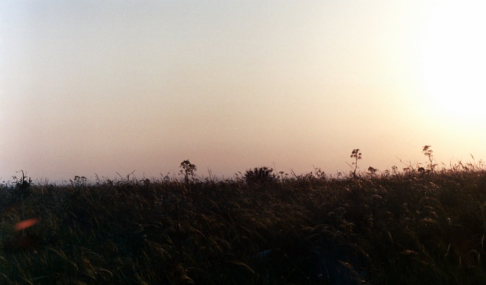
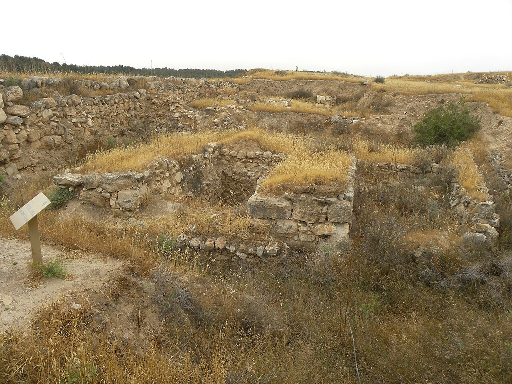
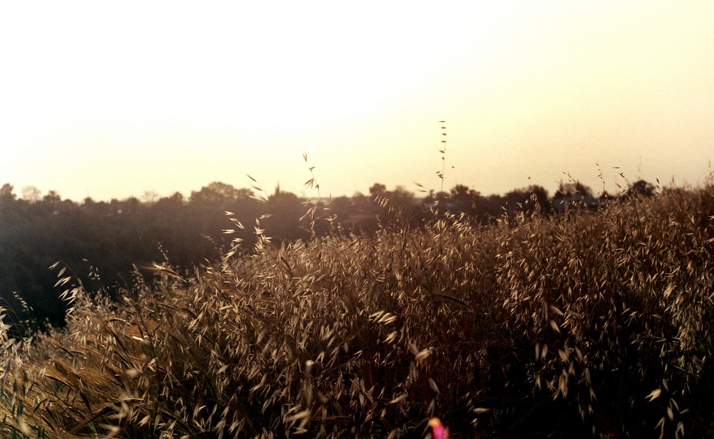
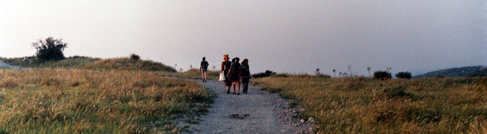
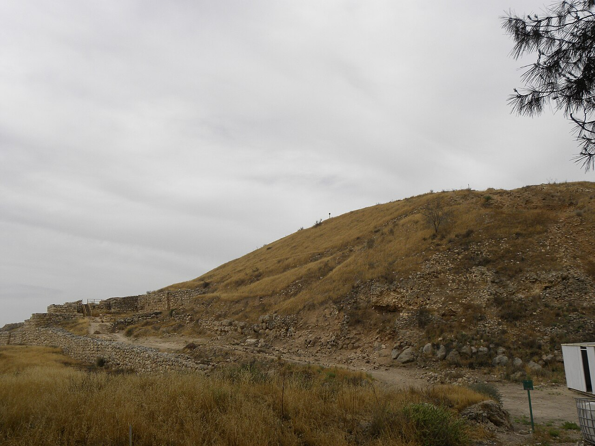
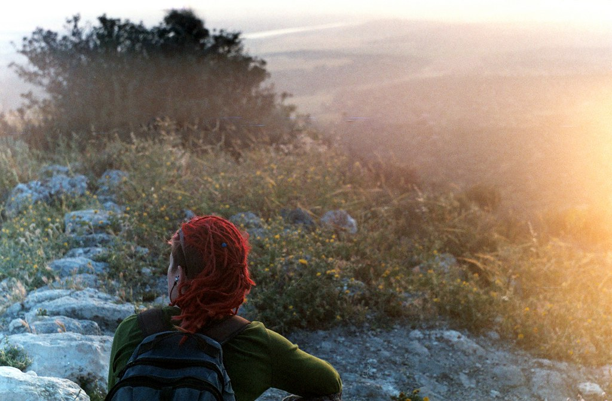
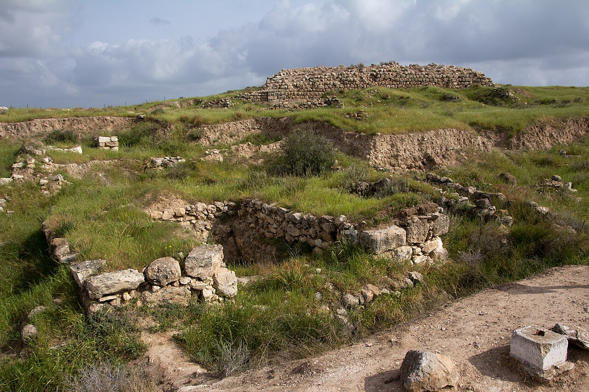

סיורי שישי · אוקטובר 2026
סיור מודרך בתל לכיש, אחת הערים החשובות של ממלכת יהודה, שמסתיים בתצפית שקיעה מראש התל אל מישור החוף.
על הסיור
לכיש הייתה העיר החשובה ביותר בממלכת יהודה אחרי ירושלים. בשנת 701 לפנה״ס הטיל עליה סנחריב מלך אשור מצור, ואת הניצחון הנציח בתבליטים ענקיים בארמונו בנינווה. התבליטים מוצגים היום במוזיאון הבריטי.
בסיור נעלה בדרך העתיקה אל שער העיר, נעמוד על סוללת המצור האשורית, שהיא סוללת המצור הקדומה ביותר שנמצאה בעולם, ונקרא יחד את ״מכתבי לכיש״ מימי החורבן הבבלי: ״אל משאת לכש נחנו שמרם... כי לא נראה את עזקה״.
וכשהשמש מתחילה לרדת, נתיישב בראש התל לתצפית מערבה, עם קפה חם ועוגה ביתית, ונראה את השפלה כולה נצבעת בכתום.


המסלול
השעות לדוגמה הן של הסיור ביום שישי 9.10. בכל מועד הסיור מתחיל כשעה ורבע לפני השקיעה.
היכרות קצרה, כוס תה או קפה ויציאה לדרך.
עולים בדרך שבה עלו שיירות ומלכים, אל שער ששת התאים, מהגדולים שנמצאו בארץ.
הממצא המרגש מ־2016 וסיפור הרפורמה הדתית של חזקיהו מלך יהודה.
מעמידים מול העיניים את המצור האשורי של 701 לפנה״ס, בדיוק במקום שבו התרחש.
תצפית מערבה, כריות ישיבה, שתייה חמה ועוגה, ושקט.
יורדים לאור פנסי ראש (מחלקים לכל המשתתפים) בחזרה לחניון.




מועדים קרובים
בסוף אוקטובר עוברים לשעון חורף, ולכן הסיור של 30.10 מוקדם יותר.
ממשתתפים
״עברנו ליד לכיש מאות פעמים ולא ידענו מה יש שם. ההדרכה הייתה מרתקת והשקיעה בסוף פשוט עוצרת נשימה.״
״הסיפור של המצור האשורי, כשאתה עומד על הסוללה עצמה, זה משהו אחר. ממליץ בחום, במיוחד לזוגות.״
״קבוצה קטנה, קצב נעים, וקפה ועוגה בראש התל. בדיוק מה שהיינו צריכים לסוף שבוע.״
שאלות נפוצות
בחניון תל לכיש, סמוך למושב לכיש (כ־10 דקות מקריית גת). החניה חינם. קישור לניווט נשלח לנרשמים יום לפני הסיור.
כן. ההליכה קלה, עם עלייה מתונה אחת אל ראש התל. מתאים מגיל 10 ומעלה.
בגשם או בשרב אנחנו דוחים את הסיור. אפשר לעבור למועד אחר או לקבל החזר מלא.
ביטול עד 48 שעות לפני הסיור מזכה בהחזר מלא.
כן, לקבוצות, משפחות וימי הולדת. השאירו פרטים בטופס ההרשמה ונחזור אליכם.